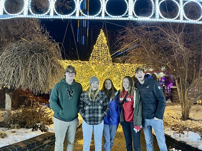

<html lang="en">
  <head>
    <meta charset="utf-8" />
    <meta
      name="viewport"
      content="width=device-width, initial-scale=1, shrink-to-fit=no"
    />
  </head>
</html>

<h1>Michael Christensen</h1>
</head>

<style>
  body{
    font-family: Arial, Helvetica, sans-serif;
    font: size 20px; 
    background-color: burlywood;
  }
  
  h1 {
    text-align: center;
  }

  div {
    text-align: center;
  }
  .intro {
    box-shadow: inset;
    font-family: Arial, Helvetica, sans-serif;
    font: size 20px
  }
  .intro {
    font-size: 1.25rem !important;
    font-family: Arial, Helvetica, sans-serif;
    font: size 20px
  }

  .intro {
    margin-bottom: 1.5rem !important;
    font-size: 20px;
  }
  .image{
    size: 1px;
    position: relative;

  }
  .intro{
    background-color: antiquewhite;
    position: right;
  }
  .more{
    top: 10px;
    background-color: antiquewhite;
    font-family: Arial, Helvetica, sans-serif;
    font: size 20px
  }
  
  .vid{
    position: relative;
  }

  .hiking{
    background-color: antiquewhite;
    font-family: Arial, Helvetica, sans-serif;
    font: size 20px
  }
  .tableauplaceholder{
    size: auto;
  }
</style>

<body><div class="topnav">
  <a class="active" href="#home">Home</a>
  <a href="resume.html">Resume</a>
  <a href="#photos">Photos</a>
  <a href="#more">More</a>
</div>
<b>About</b>
<div class="intro">
  Michael is the second oldest of 5 children. He is a triplet and has 3 sisters
  and 1 brother. Michael was born in Dallas Texas and lived there for his early
  childhood. He also moved from Texas at the age of 10 to Maryland where he
  lived for 2 years. He then moved to colorado and claims Denver as home. He
  enjoys sports including basketball, football, and soccer among his favorites.
  He also enjoys doing things outdoors like hiking, biking and repelling.
</div>
<div class="image"></div>

<div class="More">Michael enjoys being outdoors and spending time with friends and family below are  some videos of learning how to climb and rappel </div>

<iframe class="vid" width="560" height="315" src="https://www.youtube.com/embed/-Js25JBg9Sc" title="YouTube video player" frameborder="0" allow="accelerometer; autoplay; clipboard-write; encrypted-media; gyroscope; picture-in-picture; web-share" allowfullscreen></iframe>

<div class="hiking">From a young age Michael went on many hikes with his family.  One of the things he enjoys about living in Colroado, is the mountains.  COlorado has many beautiful hikes and trails.  He has climbed many "14ers' in the state and looks forward to climbing more.  Below are some information about the Colorado 14ers. </div>
</body>

<div class='tableauPlaceholder' id='viz1681954938791' style='position: relative'><noscript><a href='#'></a></noscript><object class='tableauViz'  style='display:none;'><param name='host_url' value='https%3A%2F%2Fpublic.tableau.com%2F' /> <param name='embed_code_version' value='3' /> <param name='site_root' value='' /><param name='name' value='HikingColoradoFourteenersMountainshigherthan14000ft&#47;Dashboard1' /><param name='tabs' value='yes' /><param name='toolbar' value='yes' /><param name='static_image' value='https:&#47;&#47;public.tableau.com&#47;static&#47;images&#47;Hi&#47;HikingColoradoFourteenersMountainshigherthan14000ft&#47;Dashboard1&#47;1.png' /> <param name='animate_transition' value='yes' /><param name='display_static_image' value='yes' /><param name='display_spinner' value='yes' /><param name='display_overlay' value='yes' /><param name='display_count' value='yes' /><param name='language' value='en-US' /></object></div>                <script type='text/javascript'>                    var divElement = document.getElementById('viz1681954938791');                    var vizElement = divElement.getElementsByTagName('object')[0];                    if ( divElement.offsetWidth > 800 ) { vizElement.style.width='100%';vizElement.style.height=(divElement.offsetWidth*0.75)+'px';} else if ( divElement.offsetWidth > 500 ) { vizElement.style.width='100%';vizElement.style.height=(divElement.offsetWidth*0.75)+'px';} else { vizElement.style.width='100%';vizElement.style.minHeight='1450px';vizElement.style.maxHeight=(divElement.offsetWidth*1.77)+'px';}                     var scriptElement = document.createElement('script');                    scriptElement.src = 'https://public.tableau.com/javascripts/api/viz_v1.js';                    vizElement.parentNode.insertBefore(scriptElement, vizElement);                </script>